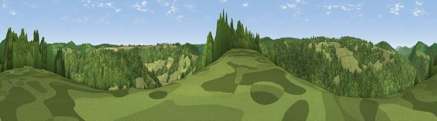

Viewpoint near Redbrook
#31446 in England · top 64% of its area beats it · near Redbrook · open accessWhere it is
The exact computed spot (SO 53875 08475). Click the marker for map links.
Public access: this spot lies on mapped open-access land (CRoW Act 2000) — you may roam here on foot. Computed from Natural England's CRoW access layer and OpenStreetMap rights of way — not the legal definitive map. Always verify locally.
The view, rendered

A 360° render of this exact spot computed from the terrain model, tree cover and land cover — summer colours, afternoon light, calibrated against photographs of famous viewpoints. Real trees, hedges and buildings will differ in detail.
The panorama
Grey silhouette: terrain skyline in each direction (720 bearings, Earth curvature and refraction included). Dashed green: skyline with trees (+15 m) and buildings (+8 m) as obstacles. Blue strip: how far the ground is visible on each bearing.
Where the view opens
Wedge length = distance to the farthest visible ground on that bearing (vegetation-aware). Rings at 10, 25 and 50 km.
What fills the view
75% woodland · 22% grassland · 2% cropland
Angular shares of the visible panorama (visual magnitude), not map area. Landscape diversity 0.29 (0–1 Shannon).
Key numbers
More beautiful places nearby
The staircase of upgrades: each row has a higher view potential than everything closer. Driving times are estimates from straight-line distance, calibrated against real road routing — check an actual route before setting out.
| Place | Direction | Drive | Score |
|---|---|---|---|
| Viewpoint near Newland | SSE · 1 km | ~4 min | 39.8 |
| Viewpoint near Redbrook | N · 2 km | ~4 min | 44.9 |
| Viewpoint near St Briavels | SSE · 3 km | ~6 min | 46.1 |
| Viewpoint near Whitecliff | NE · 3 km | ~8 min | 49.1 |
| Buck Stone | N · 4 km | ~9 min | 71.0 |
| Viewpoint near Welsh Newton | NNW · 8 km | ~17 min | 72.0 |
| Viewpoint near Goodrich | NNE · 11 km | ~20 min | 74.0 |
| Skenchill | NNW · 11 km | ~21 min | 75.8 |
51.77304, -2.66989 · source: screening · position refined by local search. Computed location — check access rights before visiting.